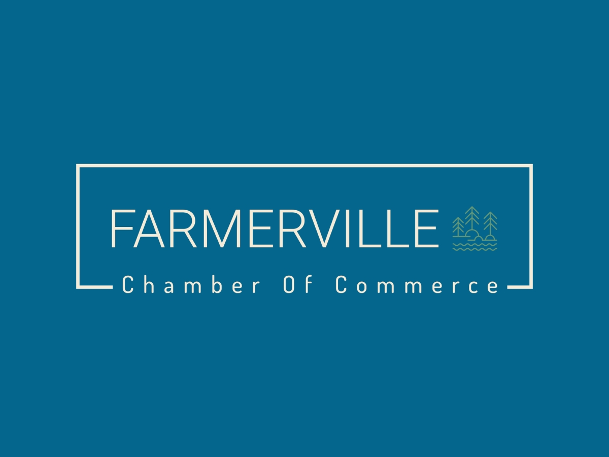

Site Name:
Farmerville Chamber Of Commerce
Site Purpose:
The purpose of the site is to provide the public with information about the town like history, businesses, and things to do around the town. This site also serves the purpose of providing local business with ways of connecting with one another.
Domain Name:
farmervillechamber.org
Logo:
